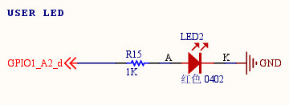
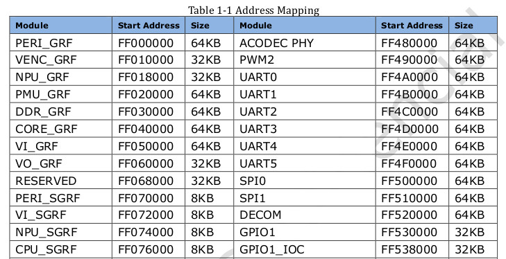
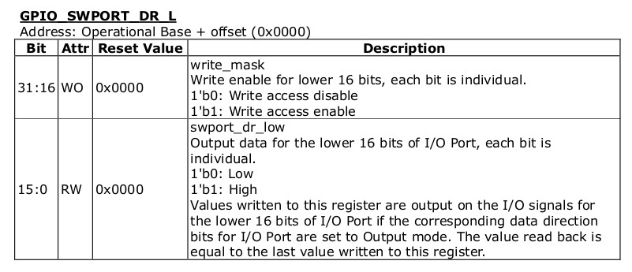
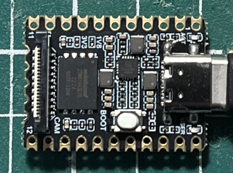
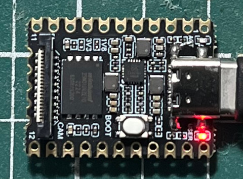

參考資訊：
https://github.com/xboot/xrock
https://github.com/trebisky/Rockchip
https://wiki.luckfox.com/luckfox-pico/luckfox-pico-quick-start/
https://github.com/steward-fu/website/releases/download/datasheet/rockchip_rv1106_rm.pdf
LED腳位




.global _start
.equ GPIO1_BASE, 0xFF530000
.equ GPIO1_IOC, 0xFF538000
.equ PA_DAT_L, 0x00
.equ PA_DAT_H, 0x04
.equ PA_DIR_L, 0x08
.equ PA_DIR_H, 0x0c
.arm
.text
_start:
ldr r0, =GPIO1_BASE
ldr r1, =0xffffffff
str r1, [r0, #PA_DIR_L]
ldr r1, =(1 << 2)
0:
eor r2, r1
str r2, [r0, #PA_DAT_L]
ldr r3, =50000
1:
subs r3, #1
bne 1b
b 0b
.end
main.ld
MEMORY {
RAM : ORIGIN = 0, LENGTH = 64K
}
SECTIONS {
.text : { *(.text*) } > RAM
.data : { *(.data*) } > RAM
.bss : { *(.bss*) } > RAM
}
Maekfile
all: arm-linux-gnueabihf-as -mcpu=cortex-a7 -o main.o main.s arm-linux-gnueabihf-ld -T main.ld -o main.elf main.o arm-linux-gnueabihf-objcopy -O binary main.elf main.bin run: xrock extra maskrom --rc4 off --sram main.bin clean: rm -rf main.bin main.o main.elf
編譯
$ make
arm-linux-gnueabihf-as -mcpu=cortex-a7 -o main.o main.s
arm-linux-gnueabihf-ld -T main.ld -o main.elf main.o
arm-linux-gnueabihf-objcopy -O binary main.elf main.bin
按下白色按鍵後，插入USB到PC，接著下載到SRAM執行
$ make run
xrock extra maskrom --rc4 off --sram main.bin
完成

